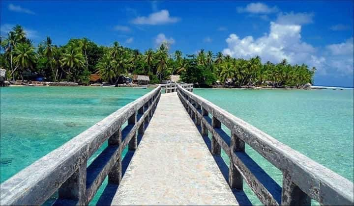

Know About Us

Kapingamarangi is an atoll located in the Federated States of Micronesia, a country in the western Pacific Ocean. It is part of the Pohnpei state and is located approximately 440 miles (710 kilometers) east of the capital city, Palikir. Kapingamarangi is home to around 500 inhabitants, who are mainly Micronesian and practice a traditional way of life. The atoll consists of 33 small islets that encircle a large lagoon. The atoll is relatively remote and can only be reached by boat, which takes several days from the nearest major port. The island's isolation has helped to preserve its traditional way of life and culture, which has been passed down from generation to generation for thousands of years.
The people of Kapingamarangi are known for their seafaring skills and their deep knowledge of the ocean. They have traditionally lived off the sea, fishing for a wide variety of species and collecting shells, coral, and other marine resources. In recent years, the island has also begun to develop a small tourism industry, with visitors coming to explore the pristine beaches, coral reefs, and traditional villages.Kapingamarangi is governed by a traditional council, which is made up of elders and leaders from the various villages on the atoll. The council is responsible for making decisions about the use of the island's resources and managing disputes among residents.
In recent years, the council has also been working to develope sustainable practices that will help to protect the island's fragile ecosystem and ensure the long-term viability of the community. One of the most unique aspects of Kapingamarangi's culture, is its language, which is also called Kapingamarangi.
The language is part of the Polynesian language family and is closely related to other languages spoken in the region, such as Tongan and Samoan. However, Kapingamarangi has some unique features that set it apart from other Polynesian languages, such as its use of a glottal stop and its distinctive intonation patterns.Another important aspect of Kapingamarangi culture is its music and dance traditions. The island is known for its traditional dances, which are performed to the accompaniment of drums and other traditional instruments. These dances often tell stories of the island's history and legends, and are an important way for the community to preserve its cultural heritage.Despite its remote location and small size, Kapingamarangi is facing a number of challenges in the modern era. One of the biggest threats is the impact of climate change, which is causing sea levels to rise and making it harder to maintain the island's fragile ecosystem.
In addition, the island is also facing economic pressures as it tries to balance the demands of tourism with the need to preserve its traditional way of life and culture.Overall, Kapingamarangi is a unique and fascinating place with a rich culture and history. Despite the challenges it faces, the island's residents remain committed to preserving their traditional way of life and passing it down to future generations. As a result, Kapingamarangi remains an important cultural center in the Federated States of Micronesia and a vital part of the region's heritage.
